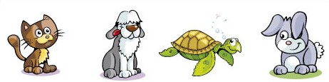

¿Qué encontrarás en Pet Lovers?
Consejos de cuidado y bienestar: Desde cómo elegir la mejor comida para tu perro o gato, hasta recomendaciones sobre higiene, ejercicio y bienestar emocional. Cada animal es único, y en Pet Lovers ofrecemos guías especializadas que abarcan desde cachorros inquietos hasta gatos senior que requieren cuidados más específicos. También cubrimos temas como el cuidado de otras mascotas, como conejos, aves, peces e incluso reptiles. Entrenamiento y comportamiento: ¿Tu perro tira mucho de la correa? ¿Tu gato araña los muebles? En esta sección encontrarás técnicas de entrenamiento positivo que te ayudarán a fortalecer el vínculo con tu mascota, corregir comportamientos no deseados y garantizar una convivencia armoniosa en el hogar. Salud y prevención veterinaria: La salud de tu mascota es lo primero, por eso compartimos artículos sobre prevención de enfermedades, vacunación, alimentación saludable, y cómo reconocer señales de que algo no está bien. También incluimos guías sobre cómo prepararte para una visita al veterinario y qué hacer en caso de emergencias. Adopción responsable: Adoptar una mascota es una decisión que cambia vidas, tanto para ti como para el animal que recibes en tu hogar. En Pet Lovers, promovemos la adopción responsable, brindando recursos sobre cómo elegir la mascota adecuada, adaptarla a su nuevo entorno y garantizar que se sienta amada y segura. Compartimos historias conmovedoras de adopción que inspiran a nuestra comunidad a hacer lo mismo. Entretenimiento y actividades: Las mascotas también necesitan diversión. Desde ideas de juguetes caseros hasta actividades al aire libre como senderismo o paseos por el parque, ofrecemos una amplia variedad de opciones para mantener a tu mascota física y mentalmente activa. Además, organizamos retos y juegos interactivos en los que puedes participar con tu mascota. Historias de la comunidad Pet Lovers: Nuestro blog no sería lo mismo sin ti. En esta sección, compartimos relatos reales de dueños de mascotas que han experimentado momentos únicos con sus animales. Desde la superación de problemas de comportamiento hasta rescates emocionantes, estas historias demuestran el profundo impacto que las mascotas tienen en nuestras vidas.
¡Bienvenido a Pet Lovers! üêæüíñ
En este blog, compartimos todo lo que necesitas saber para cuidar, entender y disfrutar al máximo de tus queridas mascotas. Ya sea que tengas un perro, un gato, un conejo o cualquier otro compañero animal, aquí encontrarás consejos útiles, historias conmovedoras y recomendaciones para que tu vida con ellos sea lo más feliz y saludable posible.
Este un espacio dedicado a todas las personas que comparten su vida con una mascota o están pensando en adoptar una. En este blog, encontrarás información útil y entretenida sobre todo lo que necesitas saber para cuidar a tus amigos peludos, emplumados o escamosos. Nuestro objetivo es ayudarte a mejorar la calidad de vida de tus mascotas, ofreciéndote consejos prácticos, historias inspiradoras y las últimas novedades sobre el mundo animal.
¡Únete a la comunidad de Pet Lovers!
¿Tienes alguna pregunta o historia para compartir? No dudes en escribirnos en los comentarios o seguirnos en nuestras redes sociales para estar al tanto de las últimas novedades.
Tu amor por los animales hace del mundo un lugar mejor, ¡y aquí estamos para ayudarte a cuidar de ellos!
Actividades al aire libre con tu mascota: Diversi√≥n asegurada üèûÔ∏èüêæ
Salir con tu mascota al aire libre no solo mejora su salud física, sino también su bienestar mental. Descubre algunas actividades que puedes hacer con tu perro o gato para disfrutar del aire libre y mantenerlos activos.
- Excursiones por la montaña
- Picnics en el parque
- Entrenamiento de agilidad